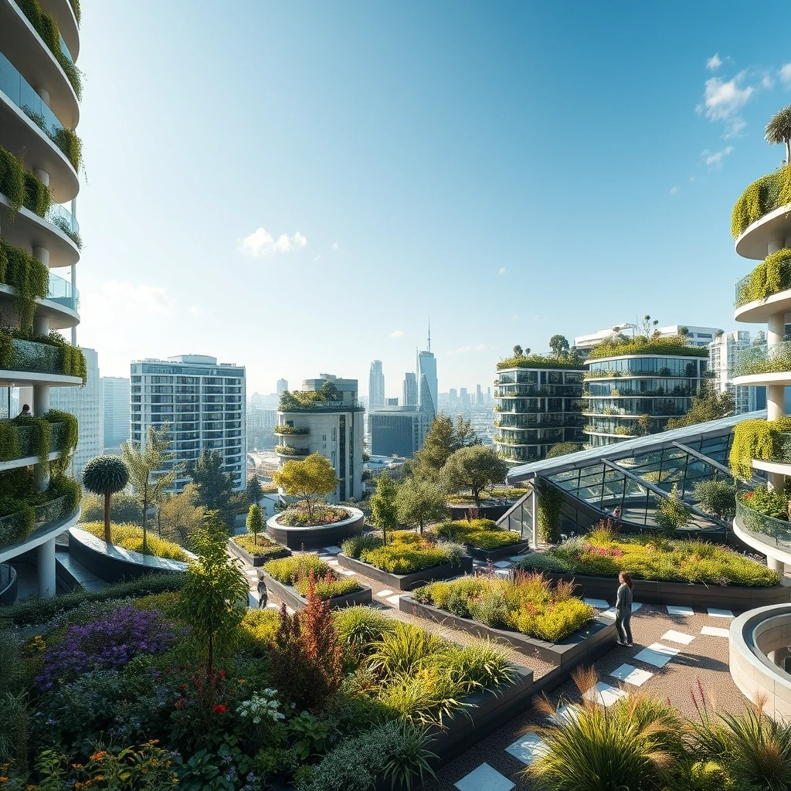

In a world where concrete jungles dominate our landscape, technology is set to revolutionize the way we cultivate nature in the heart of our cities. So, fasten your seatbelts as we explore the high-tech solutions that will shape the future of urban gardening.
Vertical farming is the cutting-edge technology that allows us to grow crops in vertical layers or stacked trays. With limited horizontal space in cities, these green skyscrapers offer a remarkable solution...
Welcome to the era of smart gardening systems, where technology meets horticulture. These systems use sensors, artificial intelligence, and internet connectivity to monitor and manage various aspects of your garden...
Hydroponics and aeroponics are soilless cultivation methods that rely on nutrient-rich water or mist to nourish plants' roots...
As we delve deeper into the realm of energy-efficient solutions, we're witnessing a remarkable convergence of technology and sustainability...
By embracing energy-efficient solutions, we can reduce our carbon footprint, conserve precious resources, and create healthier, more sustainable urban environments.